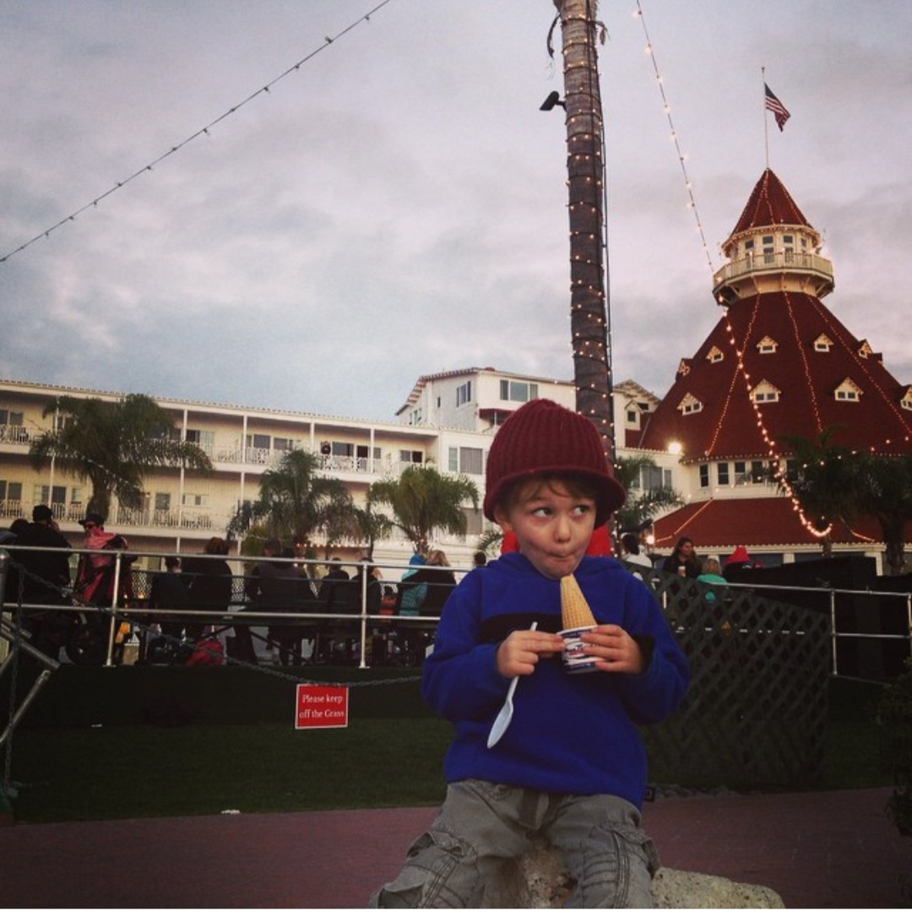

☆JBENL★
hello world.
hello world. ellow orld.h llowo rld.he lowor ld.hel oworl d.hell world. hello hello world is josiah's website for all his music  ANOTHER KAZ TYPE BEAT (UNUSED) 9/16/25 *NOTE: OFFBEAT BC BANDLAB SUCKS KAZ TYPE BEAT.DEMO (UNUSED) 9/15/25 SMMR.WNT.AND.CM.ARND - ACAPPELLA COVER 9/15/25 DONT WNA DO MY WORK 9/9/25 SO TIRED (FT. UNDYRSCORE) 9/7/25 GOLDEN HOUR TEST - COVER 9/5/25 PARACOSM BY DOTTIE (FT. UNDYRSCORE & ME) 8/23/25 BLOSSOM AND BLOOM 8/22/25 TONIGHT YOU BELONG TO ME - COVER 7/12/25 MACDEMARCO TYPE BEAT (UNFINISHED) 6/19/25 MALCOLM TYPE BEAT (UNFINISHED) 6/15/25 BLUE SKIES - COVER 6/8/25 COOL SONG (UNNAMED) 6/8/25 CHEER ME ON - COVER 5/18/25 HEAVEN CAN WAIT - COVER (JUSTINE+VEDA) 5/11/25 HVN.CN.WT-TRIAL&ERROR 5/11/25 COUNTRY ROADS - COVER [SNIPPET] 5/6/25 I GET AROUND - COVER 5/1/25 MR SANDMAN - COVER 5/1/25 NO SURPRISES - COVER 5/1/25
MADE ON 9/16/25